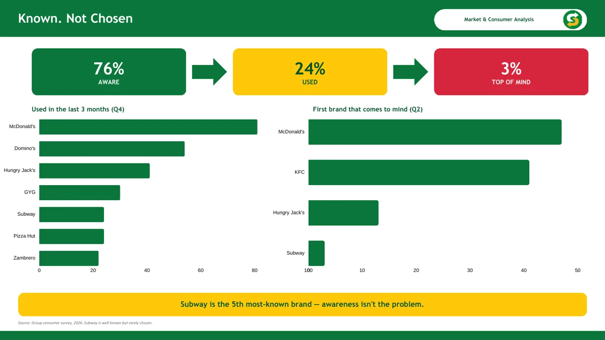

← All uni work
Subway
A brand health pitch for Subway. My part, the market and consumer analysis, showed the brand's problem is conversion and emotional connection, not awareness.
- Grade
- Distinction (survey)
- Course
- Building and Managing Brands
- Type
- Team of six, 2026
- My part
- Market and consumer analysis from our survey

Known, not chosen
Our survey of 37 people put Subway as the fifth most-known brand. 76% knew it, but only 24% had bought it in the last three months and 3% named it first.
- Awareness isn't the problemThe funnel leaks in the middle: people know Subway and still pick something else.
- It wins the functional driversAccess, variety and quality are covered by 1,255 stores, build-your-own and fresh ingredients.
- It loses on feelingValue and emotional warmth feel softer, and the brand reads as static and emotionally flat to younger consumers.
- So the strategy is conversionGrowth has to come from share and emotional connection, not more awareness.
Slides from my section of the pitch. Source: our group consumer survey, 2026.
Next project
Worth Saying